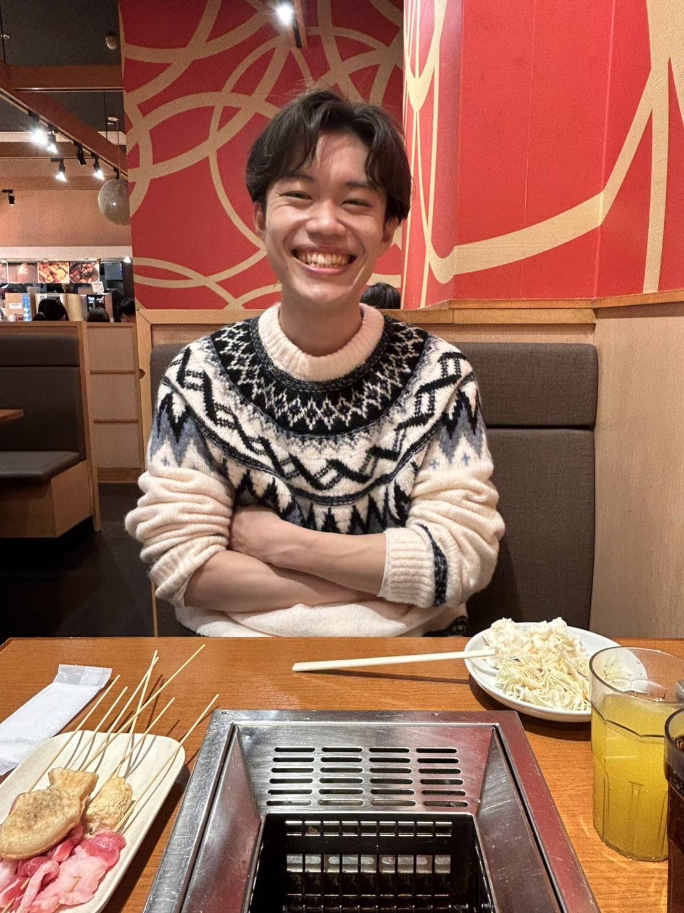

名古屋大学大学院工学研究科に所属している杉浦健太郎です．エンジニアの卵として日々奮闘しております．
or

10月10日誕生日
一宮市立大和東小学校入学．サッカー部に所属．
一宮市立中部中学校に入学．サッカー部，陸上部，ディベート部を兼部．生徒会会長．海外派遣でイタリアへ．
愛知県立一宮高等学校に入学．体操部に所属．イギリス ラドリーカレッジに留学．
名古屋大学 工学部 機械・航空宇宙工学科に入学．SICE優秀学生賞(2023年3月)(GPA 3.97/4.3)
名古屋大学大学院 工学研究科 機械システム工学専攻に入学．